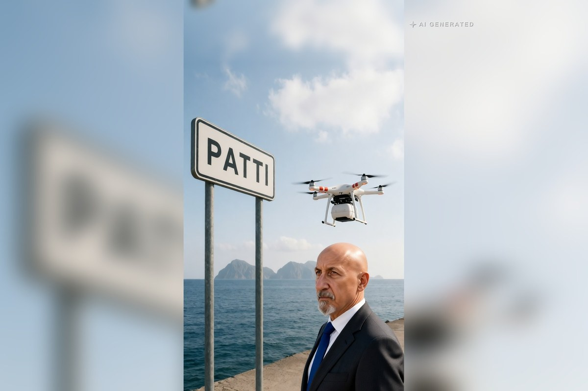

Sicilia · 1 novembre 2026
Il sangue vola da Patti alle Eolie: l'Enac autorizza il trasporto con i droni

Le sacche per le trasfusioni d'urgenza raggiungeranno Lipari e Vulcano senza aspettare l'aliscafo. L'Asp di Messina è alla firma del contratto. L'idea è di un medico dell'ospedale Barone Romeo, nata da una ragazzina ferita in mare.
di Franco Zanghì
Le sacche per le trasfusioni d'urgenza viaggeranno sui droni, dall'ospedale di Patti fino a Lipari e Vulcano. L'Enac ha dato l'autorizzazione, l'Asp di Messina sta firmando il contratto. E l'idea non è nata in un ufficio, ma in mare, da una ragazzina ferita.
Il problema
L'ospedale di Lipari ha le sue scorte di sangue. Ma quando un'emergenza le consuma tutte, le altre sacche devono attraversare il mare: con l'aliscafo, che viaggia di giorno e solo se il mare lo permette, oppure con l'elicottero, che costa e non è sempre disponibile. È un problema che non riguarda solo le Eolie: vale per ogni isola minore dove un presidio ospedaliero dipende, per i rifornimenti urgenti, dal meteo e dagli orari dei collegamenti.
Chi ha avuto l'idea
Il medico è Gaetano Crisà, per tutti Tanino, direttore del presidio ospedaliero Barone Romeo di Patti e primario del servizio di medicina trasfusionale dello stesso ospedale. Nei giorni scorsi il consiglio comunale di Patti ha aperto la seduta con un applauso unanime per lui.
Nell'intervista rilasciata a Carmelo Ferro per Omnia News, Crisà ha raccontato da dove è partito tutto: una ragazzina caduta dal gommone del padre, e la domanda che se ne è portato dietro, cioè perché quei mezzi non possano trasportare qualcosa di utile, qualcosa che può salvare delle vite.
Dalle prove al servizio
Da lì la ricerca, e l'incontro con Abzero, una giovane azienda nata alla Scuola superiore Sant'Anna di Pisa. Il primo volo di prova si è fatto a Marina di Patti nell'ottobre del 2023, e allora si parlava delle prime consegne per la primavera del 2024. Alla fine del 2024 il drone ha fatto la prima prova vera fra la Sicilia e le Eolie: 27 chilometri fino a Vulcano, altri 10 fino a Lipari, 50 minuti in tutto da un ospedale all'altro. Lo ha raccontato la stessa azienda, che ha pubblicato il video di quel volo. Dentro c'è una capsula che porta fino a 5 chili e mezzo e che controlla temperatura, umidità e vibrazioni durante tutto il viaggio.
Il servizio vero, quello di tutti i giorni, ancora non c'è: sono passati quasi due anni da quella prova. Nella stessa intervista Crisà lo dice con garbo — l'idea era venuta anni fa, in risposta a situazioni di criticità sull'isola di Lipari, le sperimentazioni negli anni sono andate tutte a buon fine, e solo adesso, dice, si è arrivati alla fase finale e alla contrattualizzazione del servizio.
Il direttore generale dell'Asp di Messina, Giuseppe Cuccì, ha detto che il trasporto è autorizzato ufficialmente dall'Enac, e le testate locali parlano di un avvio possibile entro la fine dell'anno. Patti-Lipari, per Crisà, è solo la prima rotta: lo stesso mezzo permetterebbe di raggiungere da Lipari le altre isole in poche decine di minuti, e di collegare i Nebrodi.
Perché è una buona notizia
Di solito, quando si parla di sanità, si parla di file, di liste d'attesa, di malasanità. E fa bene parlarne, perché quelle cose vanno dette. Ma qui le cose si dicono tutte: quando non vanno e quando vanno bene.
E questa è una buona notizia non solo per i droni. Dietro c'è un reparto che negli anni ha fatto crescere i donatori di sangue, e un medico che invece di lamentarsi ha cercato le soluzioni, e ci ha creduto anche quando il progetto restava fermo.
Adesso si aspetta la firma definitiva. Il punto di partenza c'è già: le prove si sono fatte a Marina di Patti, ma l'ospedale Barone Romeo ha spazi ampi e perfino una pista per l'elisoccorso, da dove un drone potrebbe decollare in sicurezza. Quando succederà, una sacca di sangue partirà da Patti e arriverà a Lipari nel tempo in cui un aliscafo sta ancora lasciando il porto.
Fonti
- StrettoWeb, «Messina, il sangue volerà alle Isole Eolie con i droni: dall'ospedale di Patti a Lipari e Vulcano», 30 ottobre 2026
- MessinaToday, «Sangue e materiale biologico in volo da Patti alle Eolie, l'Asp pronta a far partire il servizio con i droni», 30 ottobre 2026
- Tempostretto, «Un drone per il trasporto del sangue dall'ospedale di Patti alle Eolie», 30 ottobre 2026
- 98zero, «Dall'ospedale di Patti alle Eolie, il sangue viaggerà con un drone», 30 ottobre 2026
- Omnia News, intervista di Carmelo Ferro a Gaetano Crisà, ottobre 2026
- Abzero, video del volo di prova fra la Sicilia e le Eolie, 3 dicembre 2024
Il contratto fra l'Asp di Messina e l'azienda non risulta ancora firmato alla data di pubblicazione: l'avvio del servizio entro la fine dell'anno è quanto riferiscono le testate locali e non una data ufficiale.